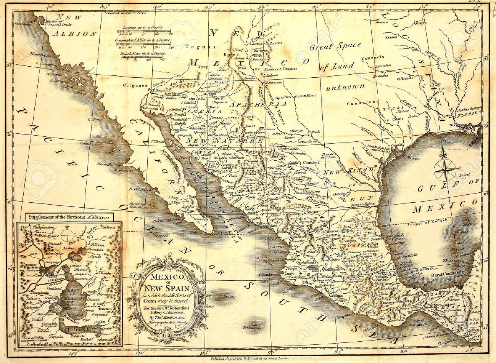

Mexico en la Historia
Cambio
¿Cuanto a cambiado México?
- La Evolución de la organización territorial de México es el proceso histórico en el cual se ha modificado la extensión, integración, división y delimitación del territorio de dicho país. Este proceso comenzó con la definición misma del espacio geográfico en el que el movimiento insurgente pretendió establecer la nueva nación. La ratificación de las 17 provincias y los dos territorios (Las Californias y Santa Fe de Nuevo México) de la antigua Nueva España, la Capitanía General de Yucatán y la provincia de Chiapas, de la ley para integrar las Cortes del 17 de noviembre de 1821; así como la adhesión al Plan de Iguala y los Tratados de Córdoba de la Capitanía General de Guatemala el 5 de enero de 1822, determinaron la extensión territorial del Imperio Mexicano. 
- La primera extensión territorial del país fue de 4 925 283 km² y se componía de 24 provincias y la capital del imperio. Los actuales límites y área del territorio quedaron definidos el 8 de julio de 1893 con la firma del Tratado Spencer-Mariscal, que estableció la frontera (y terminó las disputas en torno a ella) de México y la entonces Honduras Británica (hoy Belice); esto claro, sin incluir los acuerdos para actualizar la frontera con Estados Unidos durante el siglo XX, debido a los cambios en el caudal del Río Bravo (entre ellos el del celebre Chamizal). En tanto que la actual división política se produjo con la elevación al rango de Estados a Baja California Sur y Quintana Roo en 1974. Finalmente, la actual organización territorial se fijó con el cambio de estatus de la Ciudad de México en 2016; otorgándole en la carta magna federal, los mismos derechos y facultades de cualquier estado, pero que, considerando su categoría de capital de la república, conserva la denominación de entidad federativa; también se dejan de emplear los nombres México D.F. y Distrito Federal, para usar únicamente el término Ciudad de México.
- Los cambios históricos más significativos fueron la separación de las cinco provincias integrantes de la Capitanía General de Guatemala (Guatemala, Honduras, El Salvador, Nicaragua y Costa Rica) al finalizar el Imperio en 1823. La independencias de Texas en 1836. Y la pérdida de más de la mitad de territorio nacional, luego de la invasión de Estados Unidos (los actuales estados de California, Arizona, Nuevo México, Nevada y Utah; y porciones de Colorado, Oklahoma, Kansas y Wyoming) en 1848
 1
1 2
2 3
3 5
5 6
6 8
8 9
9 10
10 11
11¿a donde vamos?

-
Guadalupe Victoria
10 de octubre de 1824 al 31 de marzo de 1829
-
Vicente Guerrero
1 de abril al 17 de diciembre de 1829
-
VALENTÍN GÓMEZ FARÍAS
3 al 18 de junio de 1833, del 3 de julio al 27 de octubre de 1833
-
IGNACIO COMONFORT
diciembre de 1855 al 30 de noviembre de 1857
-
BENITO JUÁREZ
18 de diciembre de 1857 al 18 de julio de 1872
-
SEBASTIÁN LERDO DE TEJADA
18 de julio de 1872 y el 20 de noviembre de 1876
-
Porfirio Díaz
21 de noviembre al 6 de diciembre de 1876 y
del 17 de febrero al 5 de mayo de 1877 -
Álvaro Obregón
diciembre del 1920 al 30 de noviembre de 1924
-
Lázaro Cárdenas del Río
1 de diciembre de 1934 al 30 de noviembre de 1940
-
Vicente Fox Quesada
(2000-2006)
Datos
nombre:Andres Gracia Ramirez
Contenido de la app-3R-dic "Tema Libre elegido por el alumno"